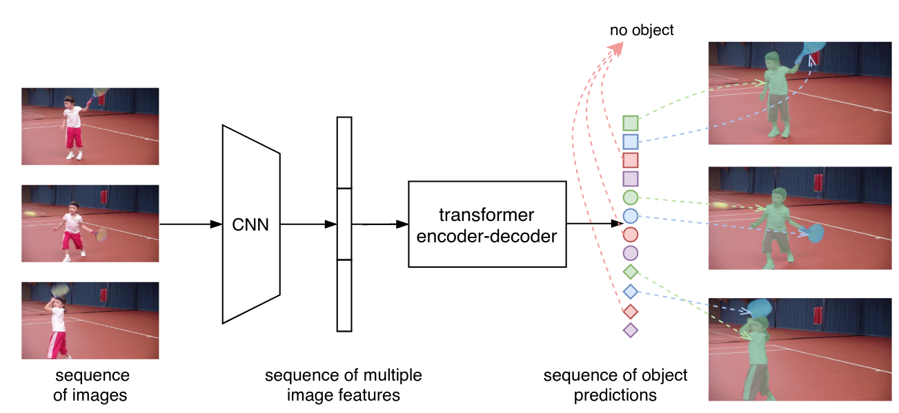

BA-INF 051 - Projektgruppe Intelligente Sehsysteme
PD Dr. Volker Steinhage
Dienstags, 14-16 Uhr, online
Vorbesprechung: Donnerstag, 23. Sept. 2021, 14 Uhr via https://bbb.informatik.uni-bonn.de/b/vol-ung-npn
Themen:
|
|
Evaluation des Datenbedarfs diverser Self-Supervised-Modelle Herkömmliche, fully supervised Deep-Learning-Verfahren benötigen große Mengen an Trainingsdaten, welche manuell annotiert werden müssen. Im Gegensatz dazu versprechen self-supervised Methoden ein Lernen nur aus Rohdaten, ohne jegliche Annotation (Jing et al. 2020). Hierbei lernt das Modell, eine nützliche interne Repräsentation der Eingabedaten zu erzeugen. Diese Repräsentation kann dann in einem Fine-Tuning-Schritt zur Lösung komplexer Aufgaben wie Klassifikation, Detektion oder Segmentierung eingesetzt werden. Self-supervised Methoden können nicht nur den Annotationsaufwand verringern, sondern auch neue Datenquellen nutzbar machen. Doch wie umfangreich müssen diese Datenquellen für self-supervised Learning sein? Diese Fragestellung soll hier erörtert und folgende self-supervised Methodiken diesbezüglich vergleichend evaluiert werden: Die Evaluation und der Vergleich der Methodiken soll auf unterschiedlich großen Teilmengen des ImageNet-Datensatzes (Krizhevsky et al. 2012) durchgeführt werden. Bildquelle: Chen et al. 2020
|
|
|
Tiefenbilder aus 3D-Filmen Tiefenbilder, welche jedem Pixel eine Entfernung zuweisen, können auf vielfältige Weise genutzt werden, beispielsweise für die Verbesserung von Detektionsmodellen oder die 3D-Rekonstruktion von Umgebungen. Im Gegensatz zu herkömmlichen Farbbildern ist die Aufnahme von Tiefenbildern jedoch komplexer und öffentlich verfügbare Datensätze sind somit weniger umfangreich. Um die Vorteile von Tiefenbildern aber mit Deep-Learning-Verfahren nutzen zu können, braucht man eben diese umfangreicheren Datensätze. Eine Möglichkeit zur Beschaffung stellen 3D-Filme dar (Ranftl et al. 2020). Der 3D-Effekt entsteht durch die Aufnahme der Szene durch zwei seitlich versetzte Kameras (Stereokamera), sodass nähere Objekte in beiden Bildern weiter voneinander entfernt erscheinen als Hintergrundobjekte. Aus dieser Disparität lässt sich entsprechend eine (dimensionslose) Entfernung bestimmen. Das Ziel ist, die Methodik von Ranftl et al. 2020 zur Extraktion von Tiefenbildern aus 3D-Filmen zunächst zu replizieren. Zusätzlich soll die Frage erörtert werden, wie informative und nicht-redundante Einzelbilder aus den Filmen sinnvoll ausgewählt werden können. Des Weiteren sollen drei verschiedene Methoden zur Bestimmung der Stereo-Korrespondenz mithilfe der im ersten Schritt extrahierten Daten evaluiert und verglichen werden (Hirschmuller et al. 2008, Tosi et al. 2021, Tankovich et al. 2021). Bildquelle: Ranftl et al. 2020
|
|  | Improved Instance Segmentation in Videos Bei der herkömmlichen Instanz Segmentierung, wird auf dem eingegebenen Bild, die Objektklasse sowie eine pro-pixel Objekt-Maskierung bestimmt. Während dies eine allgemeine Lösung für herkömmliche Daten ist, kann die performanz auf schweren Bildern abfallen. Eine Lösung ist dabei, falls vorhanden, die Kontektinformationen eines ganzen Videoclips zu verwenden um mehr Informationen außerhalb des aktuellen Bilds einzubringen. In diesem Projekt geht es darum zunächst eine kurze Einarbeitung in die Netzwerkarchitektur vorzunehmen. Darauf gefolgt, soll dann auf einem Infrarot Videostream von Kamerafallen gearbeitet werden. Ziel des Projekts ist es erfolgreich auf dem Datensatz und mit dem Neuronal Netz zu arbeiten. Dabei soll eine vergleichende Evaluation mit aktuell vorliegenden Ergebnissen gemacht werden. Bildquelle: VisTR |
| 3D Object Detection using RGB-D Videos Es sei bekannt, dass durch einen Domain-wechsel von 2D hin zu einem dreidimensionalen Raum die Präzision und Qualität der Objekterkennungen verbessert werden kann. In diesem Projekt soll es nun darum gehen 3D Object detection auf einem Kamerafallen Datensatz anzuwenden. Nach einer Initialen Einarbeitungszeit auf KITTI 2015 soll dann auf dem eigenen Datensatz weitergearbeitet werden. Dabei ist das Ziel eine Analyse der Transferierbarkeit des Neuronal Netzes auf neue Daten so wie eine Evaluation der Performanz. Ein weiterer Teil der Arbeit wird die Vervollständigung von Annotationen sein. Bildquelle: SE-SSD |
| Instance Segmentation (2 Themen / 2 Projektgruppenteilnehmende) Das Ziel dieser Projektgruppe ist die Analyse und die Anpassung einer Implementierung eines aktuellen Instance Segmentation Ansatzes, der auf Künstlichen Neuronalen Netzen basiert. Dabei wird mit Trainingsdaten aus einem aktuellen Forschungsprojekt gearbeitet. Das Ziel einer Instance Segmentation ist es, in einem Bild oder Video einzelne Objekte mit einer Bounding Box und einer exakten Segmentierungsmaske zu detektieren. Der Begriff Instance bedeutet in diesem Kontext, dass jedes einzelne Individuum einer Objektklasse getrennt voneinander erkannt werden soll (Unterschied zur Semantic Segmentation). In dieser Projektgruppe soll untersucht werden, ob sich das jeweils gewählte Verfahren für eine erfolgreiche Instance Segmentation in Videodaten von Wildtieren nutzen lassen. Der Ansatz (1) verfolgt dabei Idee, die Segmentierungserkenntnisse von anderen Objektklassen auf neue unbekannte Objektklassen zu übertragen. Der zweite Ansatz (2) benutzt verschiedene Implementierungen abhängig davon, ob Bild- oder Videodaten zur Verfügung stehen. Mögliche Probleme und Unterschiede bei der Anwendung auf Wildtierdaten sollen herausgearbeitet werden. Im Rahmen beider Themen wird auch die Thematik der Annotation von Videodaten betrachtet werden. Es gibt zwei Instance Segmentation Ansätze zur Auswahl für die Teilnehmenden:
|
| Home | News | Teaching | Projects | Publications | Team |